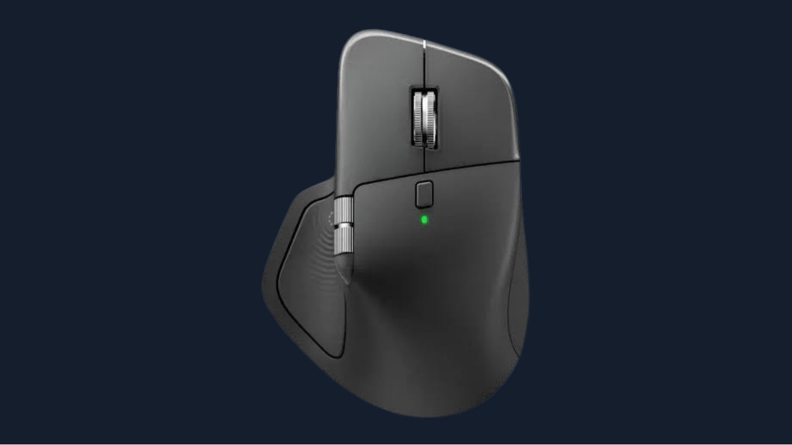

PRODUCT DESIGN / BRANDING / 2026
La metamorfosis
del diseño.
Tecnología que protege. Diseño que transforma.
Explorar proyecto ↓
EL CONCEPTO
Conservación. Regeneración. Transformación.
Butterfly explora la relación entre naturaleza, ergonomía y tecnología. La metamorfosis de la mariposa inspira un sistema de identidad y packaging que busca extender la experiencia del producto más allá de su compra.
01 / RESEARCH
Investigación y proceso
Desde el origen del mouse hasta los dispositivos ergonómicos actuales, la investigación compara productos de Logitech, Razer y Microsoft y estudia la relación entre la mano y el objeto. La crisálida surge como referencia formal y conceptual para el envase.
Consultar investigación completa ↗02 / BRANDING
Identidad visual
La inicial B se integra con formas orgánicas que evocan alas. La tipografía Pattankarn y los tonos azules y verdes construyen un lenguaje tecnológico vinculado a la naturaleza.
03 / PACKAGING
El universo Butterfly
Las láminas de packaging incluyen referencias conceptuales generadas con IA, identificadas en el material original. La función de carga y la solución logística son propuestas de diseño, no prestaciones verificadas.
04 / DIGITAL PRODUCTION
Del concepto al volumen
Registro del desarrollo en Blender: exploración volumétrica, apertura y aplicación de identidad sobre el packaging.
3D interactivo
Mockups y renders
05 / IMMERSIVE EXPERIENCE
Más allá de la pantalla
Realidad aumentada
Effect House / 8th Wall
Realidad virtual
Kuula / YouTube 360°
06 / PHYSICAL PRODUCTION
Del modelo a la maqueta
Espacio destinado al registro de troqueles, materiales, armado y pruebas físicas de apertura mediante papercraft o impresión 3D.